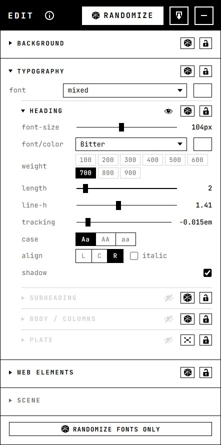

Randomize Studio
design concepts : rapid prototyping : for designer-devs
What it is
- browser-based dev/design tool for rapid visual experimentation, turning any webpage into an interactive design canvas
- adobe-inspired UI: manipulate fonts, colors, images, textures, and layouts directly in the DOM
- signature move is 'Randomize': generate unexpected variations, allows manual edits at any step.
- rapid prototyping: makes design "what ifs" cheap to explore through targeted or full-page randomization.
- agnostic html, css, js, no build step, no tool chain, no ceremony. LLM readable.
- unfinished, experimental and mostly vibe-coded with claude
Demo
This page runs all three kits, try them out below
Use in your project : AI-assisted
- 1Temporarily add tool in your project, using code-agent
- texture kit :
- typography kit :
- move-resize kit :
- effects kit :
- 2Shift+T opens edit UI : randomize or manual edit
- 3serve changes as .json to coding-agent for lasting implementation
- 4prompt tool to self-remove from project
Adobe-like UI
- layer based composition - show/hide each layer
- floating inspector to adjust elements
- drag, resize, edit text, directly on the artboard
- randomize each layer - or randomize all

Four sections, and the same three controls on every layer.
Modular
- the studio wraps a few more specific, specialized tools
- these can be used independently to handle: typography, texture, layout or effects edits
- typography - fonts, sizing, and the text blocks themselves
- texture - photographs, dynamic svg, patterns
- effects - grain and other static fx, over everything else
- move-resize - moving and resizing any element on the page
- the panels on this page are three of them - texture and effects, typography, and move-resize -
running on a page that is not the studio
Stack :
html
css
javascript
svg
google fonts
no build